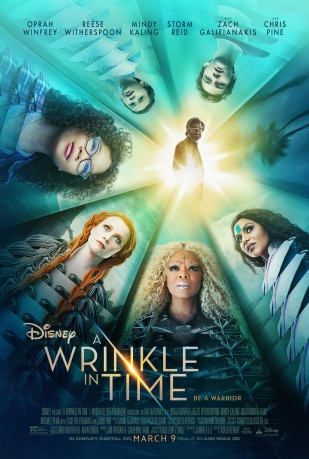
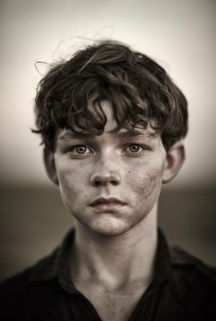
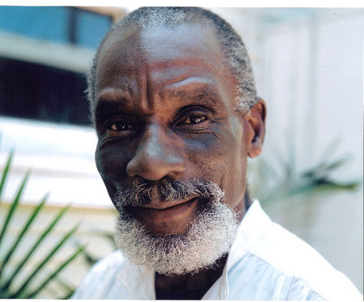
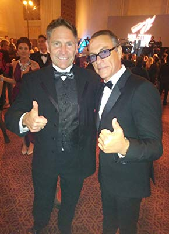
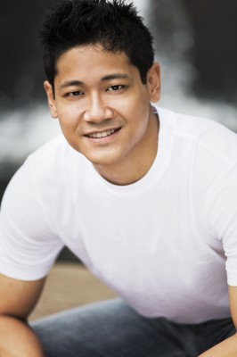

#9244 Das Zeiträtsel
Alternativ: A Wrinkle in Time
 
 IMDB-Wertung: 4.2 / 10
IMDB-Wertung: 4.2 / 10  Metascore: 53
Metascore: 53 
Following the discovery of a new form of space travel as well as Meg's father's disappearance, she, her brother, and her friend must join three magical beings - Mrs. Whatsit, Mrs. Who, and Mrs. Which - to travel across the universe to rescue him from a terrible evil.
Jahr: 2018
Dauer: 109 Minuten
FSK: 6
Land: USA Studio: Walt Disney Studios Motion PicturesTonspuren: DD5.1 - ,
Untertitel:
Auflösung: 1080p (1920x808) Größe: 8437 MB
Genre: Sci-Fi, Abenteuer, Fantasy, Familie
Regisseur: Ava DuVernay
Drehbuch: Jennifer Lee
Soundtrack: Ramin Djawadi
Darsteller:
- Storm Reid als Meg
 Oprah Winfrey als Mrs. Which
Oprah Winfrey als Mrs. Which Reese Witherspoon als Mrs. Whatsit
Reese Witherspoon als Mrs. Whatsit Mindy Kaling als Mrs. Who
Mindy Kaling als Mrs. Who-  Levi Miller als Calvin
- Deric McCabe als Charles Wallace
 Chris Pine als Mr. Murry
Chris Pine als Mr. Murry Gugu Mbatha-Raw als Mrs. Murry
Gugu Mbatha-Raw als Mrs. Murry Zach Galifianakis als Happy Medium
Zach Galifianakis als Happy Medium Michael Peña als Red
Michael Peña als Red André Holland als Principal Jenkins
André Holland als Principal Jenkins- Rowan Blanchard als Veronica Kiley
- Bellamy Young als Camazotz Woman
 David Oyelowo als The It
David Oyelowo als The It-  Conrad Roberts als Elegant Man
 Will McCormack als Mr. Teacher
Will McCormack als Mr. Teacher- Daniel MacPherson als Calvin's Father
- Akemi Look als Air Force Officer
- Tim Kang als School Superintendent
- Jessica Rockwell als Mrs. Whatsit Double
- Isaac Ordonez als Charles Wallace Double
- Jacob Eddington als Charles Wallace Double
- Giselle Paredes als Baby Charles Wallace
-  Kevyn Bashore als Beach Tourist (uncredited)
- Eric Bell Jr. als Boy on Playground (uncredited)
- Alexia Rae Castillo als Lifeguard (uncredited)
- Jasmine Dampiér als Veronica's Friend (uncredited)
- Ceasar Romero Evans Jr. als Bouncing Ball kid (uncredited)
- Ce'Ara Riley Evans als Beach Kid (uncredited)
- Will Greenburg als Robber (uncredited)
- Kimberly Guerrero als Camazotz Mother (uncredited)
- Analise Hoveyda als Veronica's Friend #1 (uncredited)
- Jesse Jacobs als Robber (uncredited)
-  Punnavith Koy als Lifeguard (uncredited)
- Daniel R. Lawson als Middle School Teacher (uncredited)
- Kimberlee Oren als Suburban Mom (uncredited)
- Jordana Taylor als Swooning Girl (uncredited)
- Maximus Verso als Boy Singer (uncredited)
- Amber Wegner als Camazots Neighbor (uncredited)
- Yvette Cason als Mrs. Teacher
- Lyric Wilson als Young Meg
- Michele Norris als Radio News Broadcaster
- Claire Montwill als Student
- Catelynn Brown als Meg Double
- Ariyah Brown als Meg Double
- Losa Fifita als Meg Double
- Joyce Larkin als Mrs. Who Double
- Teonee Motley als Mrs. Which Double
- Oz Kalvan als Charles Wallace Double
- Kai Miller als Charles Wallace Double
Datei: X:\2018(N-Z)\Zeiträtsel, Das (2018, FSK6, 1920x808).mkv seit 20.07.2018
Festplatte: HD 2018(G-Z)-2019(A-Z)
 Es gibt insgesamt 172 Filme in der Gruppe '2018(N-Z)'
Es gibt insgesamt 172 Filme in der Gruppe '2018(N-Z)'